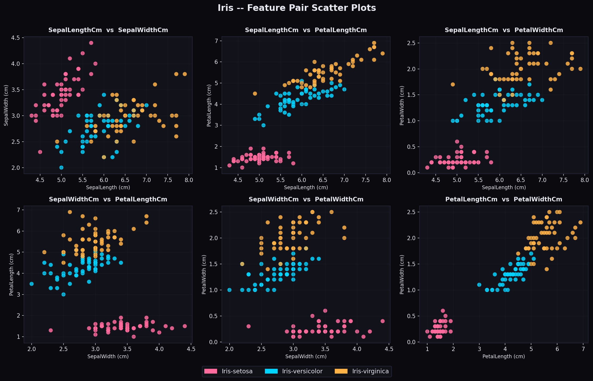
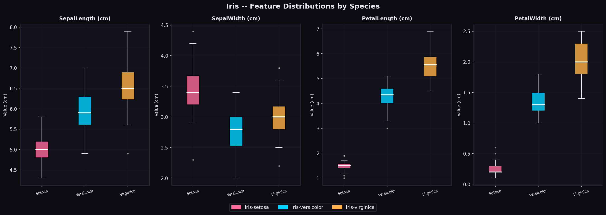
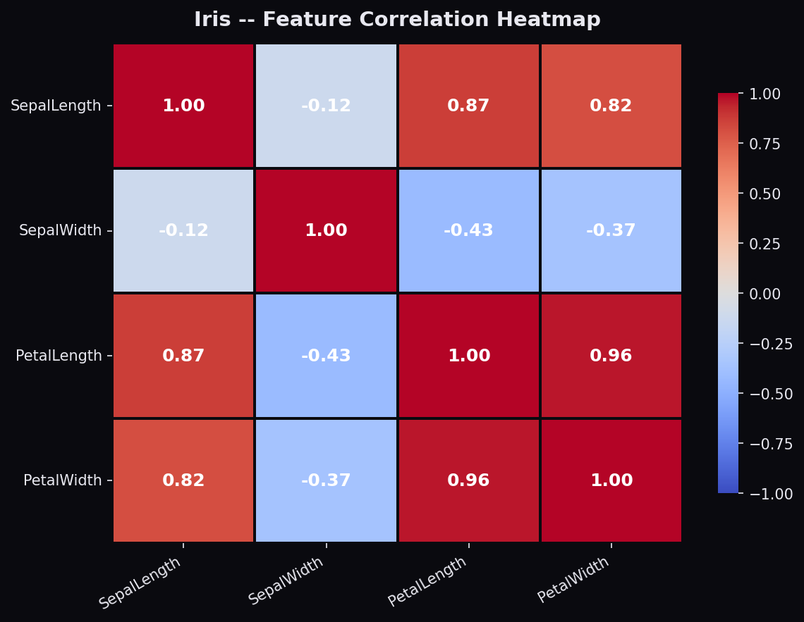
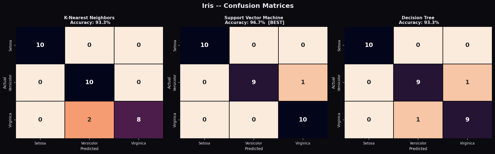
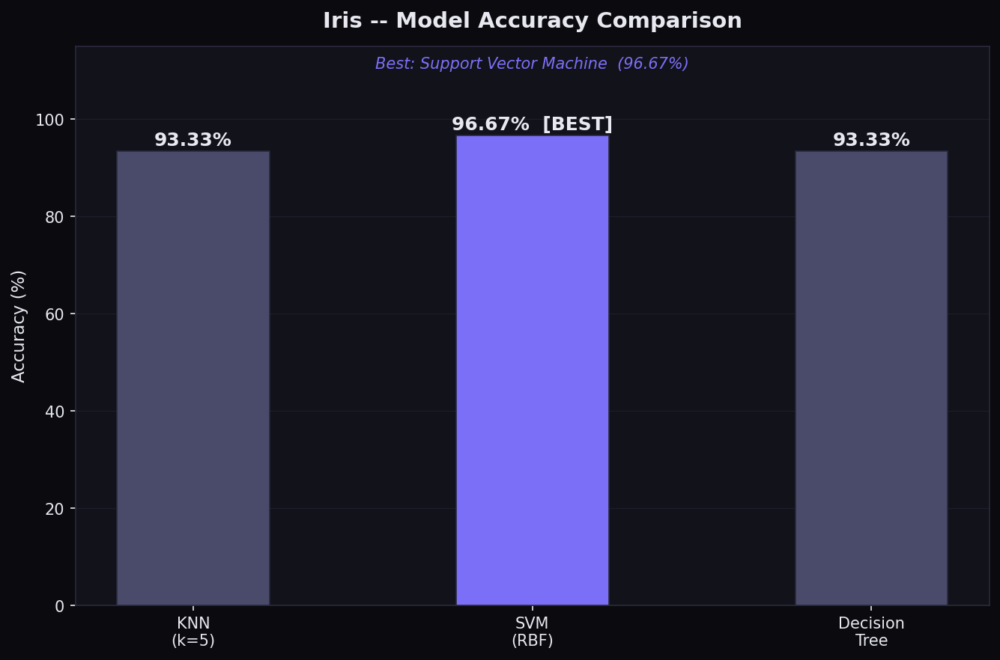

A complete, step-by-step playbook covering EDA, preprocessing, visualization, and machine learning — built specifically for data science students.
Data analysis is the process of inspecting, cleaning, transforming, and modeling data with the goal of discovering useful information, drawing conclusions, and supporting decision-making.
For data science students, it's the foundation you must master before building machine learning models. Great models start with great data understanding.
The workflow involves six tightly connected phases — from raw CSV files all the way to trained, evaluated, and visualized models ready for deployment.
🔄 The DA Pipeline
Every professional data analysis follows these six phases. Master them in order and you'll be capable of handling any dataset.
Start by loading your dataset with pandas. Always check the shape, column names, data types, and the first few rows. This gives you a bird's-eye view of what you're working with.
Compute descriptive statistics — mean, median, std, min, max. Check class distributions using value_counts(). Look for skewness, correlations, and anomalies in the data.
Handle missing values (drop or impute), remove or fix outliers, fix incorrect data types, drop duplicate rows, and standardize text columns like category names.
Encode categorical columns using LabelEncoder or OneHotEncoder. Scale numerical features with StandardScaler or MinMaxScaler. Split into train/test sets with stratification.
Train multiple ML models — KNN, SVM, Decision Tree, Random Forest. Evaluate using accuracy, precision, recall, F1-score, and confusion matrices. Always compare models side-by-side.
Create scatter plots, boxplots, heatmaps, confusion matrices, and comparison bar charts. Every chart should tell a story. Dark-themed, well-labeled plots make your work stand out.
Click each tab to see the exact code for every stage of the pipeline.
import pandas as pd import numpy as np # ── 1. Load the dataset ────────────────────────────── df = pd.read_csv('Iris.csv') # Drop unnecessary columns df.drop(columns=['Id'], inplace=True) # Basic inspection print("Shape:", df.shape) # (150, 5) print(df.head()) # first 5 rows print(df.dtypes) # column types print(df.isnull().sum()) # null counts
# ── 2. Exploratory Data Analysis ──────────────────── print(df.describe()) # statistics: mean, std, min, max print(df['Species'].value_counts()) # class distribution # Correlation between features corr = df.corr() print(corr) # Check for skewness print(df.skew()) # Group statistics per species print(df.groupby('Species').mean())
from sklearn.preprocessing import LabelEncoder, StandardScaler from sklearn.model_selection import train_test_split # ── 3. Encode target labels ────────────────────────── le = LabelEncoder() df['label'] = le.fit_transform(df['Species']) # setosa=0, versicolor=1, virginica=2 # ── 4. Split features and target ──────────────────── features = ['SepalLengthCm', 'SepalWidthCm', 'PetalLengthCm', 'PetalWidthCm'] X = df[features].values y = df['label'].values # 80/20 stratified split X_train, X_test, y_train, y_test = train_test_split( X, y, test_size=0.2, random_state=42, stratify=y ) # Scale features scaler = StandardScaler() X_train = scaler.fit_transform(X_train) X_test = scaler.transform(X_test)
from sklearn.neighbors import KNeighborsClassifier from sklearn.svm import SVC from sklearn.tree import DecisionTreeClassifier from sklearn.metrics import accuracy_score, classification_report # ── 5. Train multiple models ───────────────────────── models = { 'KNN': KNeighborsClassifier(n_neighbors=5), 'SVM': SVC(kernel='rbf', random_state=42), 'DT' : DecisionTreeClassifier(max_depth=5, random_state=42), } for name, model in models.items(): model.fit(X_train, y_train) preds = model.predict(X_test) acc = accuracy_score(y_test, preds) print(f"{name}: {acc*100:.2f}%") print(classification_report(y_test, preds))
import matplotlib.pyplot as plt import seaborn as sns # ── 6. Visualize correlations ──────────────────────── fig, ax = plt.subplots(figsize=(8, 6)) fig.patch.set_facecolor('#0A0A0F') ax.set_facecolor('#12121A') sns.heatmap( df[features].corr(), annot=True, fmt='.2f', cmap='coolwarm', ax=ax, linewidths=1 ) ax.set_title('Feature Correlation Heatmap', color='white') plt.savefig('heatmap.png', dpi=150, bbox_inches='tight') plt.show()
These 5 libraries are all you need to perform professional data analysis.
The backbone of data manipulation. Load CSVs, filter rows, group by columns, handle missing values — pandas does it all with intuitive, readable syntax.
pip install pandas
Fast numerical arrays and mathematical operations. Powers nearly every other scientific Python library under the hood. Essential for matrix operations.
pip install numpy
The core plotting engine. Create line charts, scatter plots, bar charts, histograms — with full control over every visual element including dark themes.
pip install matplotlib
Beautiful statistical visualizations built on matplotlib. Heatmaps, boxplots, violin plots, pair plots — with just 1–2 lines of code. Ideal for EDA.
pip install seaborn
The go-to ML library. Preprocessing (LabelEncoder, StandardScaler), model training (KNN, SVM, Trees), and evaluation (accuracy, F1, confusion matrix).
pip install scikit-learn
Install all 5 libraries in a single command — ready to start analyzing data in seconds.
pip install pandas numpy matplotlib seaborn scikit-learn
Real plots generated from the Iris dataset — the classic benchmark for classification problems.

Every combination of 4 features plotted against each other. Species are colour-coded: Pink = Setosa, Cyan = Versicolor, Orange = Virginica.

Distribution of each measurement grouped by species. Spot outliers and compare spread.

Petal features are 96% correlated — a key insight for feature selection.

Shows exactly which species each model confused. All models correctly classify Iris-setosa 100% of the time.

Side-by-side accuracy comparison. The best model is highlighted with an accent colour and annotated with its exact score.
Mistakes beginners make — and how to avoid them.
Always split your data first, then fit the scaler on training data only. Fitting on the full dataset causes data leakage — your model will appear to perform better than it actually does on new data.
Use stratify=y in train_test_split to maintain the original class proportions in both train and test sets. This is critical for imbalanced datasets.
Don't jump straight to modeling. Spend time understanding your data first. The best model can't fix bad or misunderstood data. EDA reveals insights that change your entire approach.
Accuracy alone is misleading for imbalanced classes. Always check precision, recall, F1-score, and the confusion matrix to get the full picture of model performance.
Label your axes. Add titles. Use color intentionally. A well-designed chart communicates instantly. Dark themes with vibrant accent colors make your work stand out in portfolios.
Keep your code modular with section comments. Save all plots. Write a README. Push to GitHub. Employers want to see clean, documented, reproducible work — not a mess of notebook cells.
The most-used commands, always at your fingertips.
Curated free resources to deepen your data science skills.
Official docs with complete API reference, tutorials, and a 10-minute quickstart guide.
Visit docs →Step-by-step ML tutorials from the official sklearn team. Covers everything from basic to advanced.
Start learning →Hundreds of chart examples with code. Perfect for finding the right visualization for your data.
Browse gallery →Free micro-courses on Pandas, ML, Data Visualization, and more — with hands-on exercises.
Take courses →The complete source code for this guide's example project — KNN, SVM, Decision Tree with 5 visualizations.
View on GitHub →Learn array operations, broadcasting, and linear algebra — the mathematical backbone of data science.
Learn NumPy →Everything you need is already installed. Open a terminal, type python iris_classification.py and watch the magic happen.